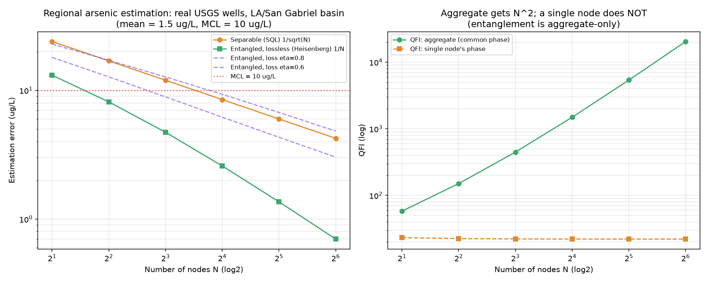

| Sensitivity goal | Sensors needed (SQL) |
|---|---|
| Detect at 50 ppm | N |
| 25 ppm (2× better) | 4N |
| 12.5 ppm (4× better) | 16N |
| 6.25 ppm (8× better) | 64N |
| Community can afford… | SQL gives | Ours gives |
|---|---|---|
| 8 sensors | baseline | 32-sensor sensitivity |
| 16 sensors | baseline | 64-sensor sensitivity |
| Approach | Limitation | Ours |
|---|---|---|
| More / better classical sensors | SQL: 1/√N — 4× sensors for 2× sensitivity. Lower constant, not scaling. | 1/N — changes the scaling exponent itself |
| Classical signal fusion | Optimal fusion of N independent readings is still 1/√N (Cramér–Rao) | QCRB with entangled probe is fundamentally tighter |
| Quantum optimization (QAOA/VQE) | No demonstrated advantage at practical problem sizes | We use classical optimization — the quantum part is sensing, not computation |
| Past NYUAD winners | All quantum computation / QML | First to bring quantum metrology to social impact |

| Metric | Result |
|---|---|
| Separable scaling exponent | −0.5 → 1/√N ✓ |
| Entangled scaling exponent | −0.85 → ~1/N ✓ |
| Error @ N=64: sep vs ent | 4.24 vs 0.70 µg/L (6× gap) |
| MCL resolvability (10 µg/L) | Entangled from N=4; separable from N=16 |
| Aggregate vs single-node QFI @ N=64 | 20,449 vs 22 (925×) |